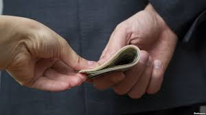
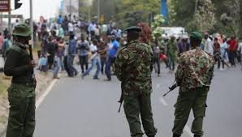
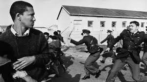
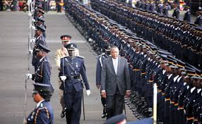

• Trevoh says that he was born a crime. This is because they were prohibiting sexual relations between whites and blacks and his mother decided to ignore that the law like she did many others.apparently,if caught having such relations one was given five years imprisonment. For this absurd rule, the government had appointed the best private officers whose only job was to go peeking in other peoples windows lest a white and a black was attempted to violate the law.
• The police were as used security boundaries between places. During the apartheid everyone hated environment since people had to adhere to other people’s mistakes and the consequences. This was because the police helped to create boundaries between the different races.one ways they did was giving privileges over others.trevoh gives example of a Chinese and Japanese who were labelled black and white .since they were both alike, the police would confuse them. In case they were ridiculing a Japanese who they thought was a Chinese they would supposedly apologize being racist.
• Irrespective of this, under the transportation the government provided no transportation for blacks, but white people created their own transit system an inform network of buses routine, controlled by private accusations operating entirely outside the law. Drivers who stole routines were killed. Being unregulated, minibuses were also unreliable.
• Police were also huge contributors to corruption. Instances of no publication for blacks, different groups ran different routes and they would fight over who controlled them. There was bribery and general shadiness that went on. Also, instances where trevoh was arrested, he was always asked for a bribe in Deseret items.
• Some of the police would abuse their power by beating up their wives.in Patricia’s case, when she tried reporting that Abel had hit her in saying that it was a family issue and seemed to take Abel’s chance .their continued ignoring of patriciah’s pleas contributed to her being shot in the head and Abel not paying for his crimes.
• Police would also arrest the law breakers like Trevoh, Shoplifters and those accused of witchcraft. When trevoh was caught shoplifting, the police the police followed him up until they questioned Trevoh in school. With the video footage but still their minds were clouded with racism but couldn’t see the culprits as starring at them.
• They misused their power by using force to rule its citizens. When Robert opened a successful restaurant, where all races welcomed and interacted fully, the authorities forced him to close it up. When they failed to get him on cleanliness they forced him to have separate toilets for races for some weird reason. Robert eventually gave up and closed down.
• Finally, the police did more harm than good. This is expected as they worked under the apartheid regime, since for all it was worth, not much, only went against basic human emotions and laws.Apartheid• A police officer, also known as an officer, policeman, policewoman, cop/copper, garda, police agent. In most countries, "police officer" is a generic term not specifying a particular rank. In some, the use of the rank "officer" is legally reserved for military personnel. Police officers are generally charged with the apprehension of criminals and the prevention and detection of crime, protection and assistance of the general public, and the maintenance of public order. However, their behaviors, roles and duties are almost similar since they are under one “roof” [government].
• Corruption being the major problem affecting our countries police are the huge contributors to this. For instance in the transportation sector. People who are arrested due to in adherence to the road safety rules, (driving skills rules), they always ask for bribes in very Deseret items.
• Police officers at times misuse their power. Due to this they make the innocent suffer leading to at times kills. Another instance, is when policer’s are found in pubs and later on causing chaos which at times cause severe pains to citizens, due to death, the innocent arrested and so on. Despite this police officers also at times misuse their power in their own families. Where we have heard of instances where women, children are mercilessly beaten up but their case end up not being solved in justice.
• They maintain public law and safety. For sure they try doing their part in investigating break-ins, making arrests, directing traffic. However they don’t arrest people for practicing witchcraft and don’t oppress the citizens to the point of being the world largest oppressive. They also help in preventing other crimes, by providing moral support to the victims.
• The police enforce laws in a better manner compared to the police in the apartheid southafrica.each and every citizen is treated equally according to the law. As a country Kenya we all have rights and freedoms should not be denied despite the color, race or tribe.
• They are also responsible for maintaining law and order. In case of riots, emergency cases they are all responsible for all that. Irrespective of that they at times tend to promote order in the bad way. Where we get to find out they lead to many harms.
• Finally, police almost do more good than harm. This is expected since they work under the government. It is an opportunity for all citizens to us since most of their lives are always in great danger. Act with kindness, but don’t expect gratitude.Roles of police in kenya
THANKS TO OUR POLICE!